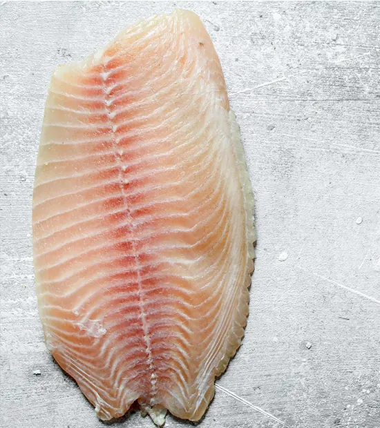
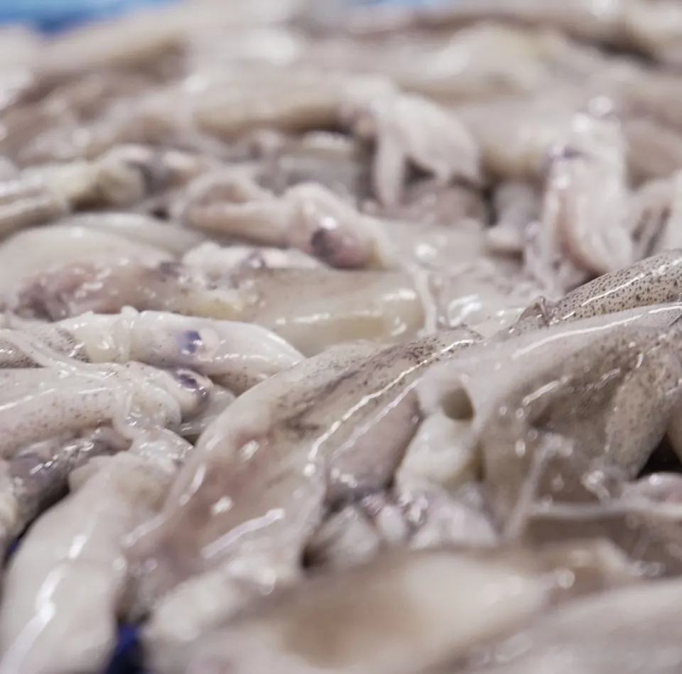
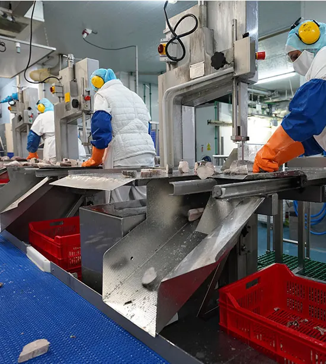
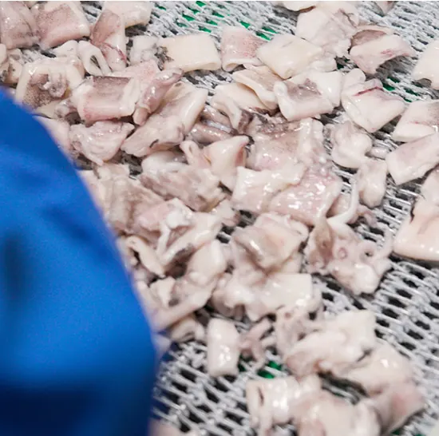
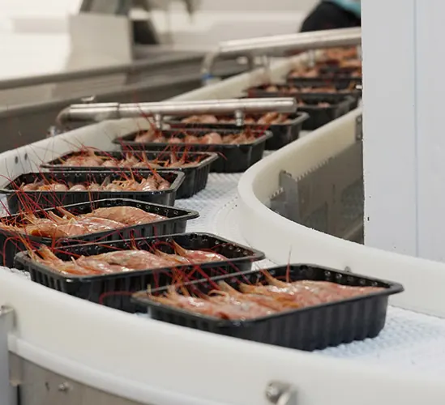
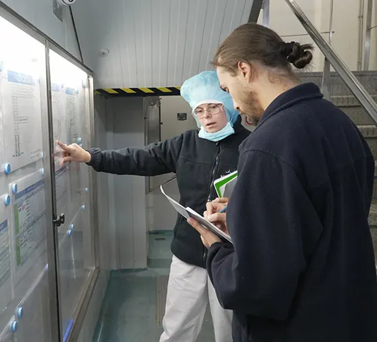
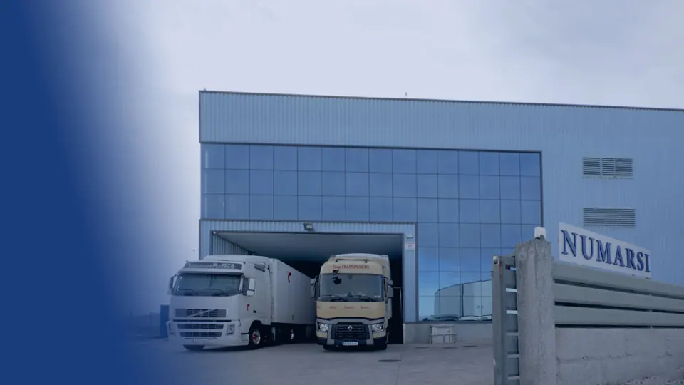

Fish filleting and skinning
From whole (HG) fish or from fresh or IQF fillets.
See service: Fish filleting and skinningWe process frozen seafood so our clients can reach consumers with the best product. We adapt to each client’s needs while preserving the quality of their raw material.

We handle one step of the process or the complete product: from raw material to frozen, packed product.

From whole (HG) fish or from fresh or IQF fillets.
See service: Fish filleting and skinning
Dedicated line for gutting and cutting into rings.
See service: Cephalopod cleaning, gutting and treatment
Medallions, steaks, cubes and strips, also from blocks.
See service: Cutting in different sizes and shapes
Two dynamic tunnels with a capacity of 4 t/h.
See service: IQF freezing and glazing
Bags, double skin, vacuum, cartons and bulk.
See service: Packing in different sizes and formatsA service company that complements its clients’ production processes and is part of their value chain.
We only sell services, so we never compete with our clients.
We devote all our time to solving each client’s production needs.
High quality and food safety standards, with a Quality Department that checks the whole process.
Cold storage, yield analysis and tailor-made samples, delivered on the agreed date.

Every client has its own specification, brand and market. We work with your raw material and the cut, weight and format you need, and we keep your products confidential.
Our own Quality Department applies strict checks throughout the production process.
International GFSI-recognised food safety standard required by major retailers.
Traceability for products from certified sustainable fisheries.
Traceability for products from certified responsible aquaculture.
Recognition of sustainable fishing and aquaculture practices.
Two factories in Pontevedra totalling 3,500 m², with filleting, cephalopod, cutting, IQF freezing and packing lines.
See our facilities and videos
Tell us what you need and we’ll propose how to do it, with samples if required.